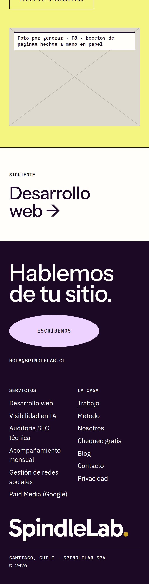

Home
la portada, con el hero «Ahí se corta el circuito» y el chequeo


Ver la página completa


SpindleLab v3 · E10 · compuerta 2 · 16 de octubre de 2026
Dirección
The Ready a fondo.
la portada, con el hero «Ahí se corta el circuito» y el chequeo
un servicio, con sus planes y el compromiso de los 3 meses


las cuatro piezas de obra



Dirección
La letra y los colores de The Ready sobre la claridad de Gehl.
la portada, con el hero «Ahí se corta el circuito» y el chequeo


un servicio, con sus planes y el compromiso de los 3 meses


las cuatro piezas de obra


Fotos por generar
Cada espacio gris con la cruz es una foto nueva, del tamaño y la proporción exactos. Las personas son ambiente de la empresa del cliente: nada las presenta como equipo de SpindleLab ni como clientes, y ninguna va al lado de tu retrato. La obra, las pantallas y tu retrato son reales.
| Foto | Dirección | Página | Proporción | A 1440 (px) | A 390 (px) | Qué muestra |
|---|---|---|---|---|---|---|
| F1 | Taller | Home | 0,58 vertical a 1440 · 4:5 a 390 | 420 × 724 | 390 × 488 | Tres personas de pie alrededor de una mesa larga con hojas impresas y notas de colores, en la oficina vidriada de una empresa cliente (una distribuidora, la bodega al fondo). De espaldas o de perfil, nadie posa a cámara. Luz de día, grano en el archivo. |
| F2 | Taller | Home | 4:5 | 398 × 498 | 280 × 351 | Detrás del mesón de una ferretería o distribuidora, una persona responde el mensaje de un cliente en el teléfono, de perfil; la pantalla no se lee. Estanterías ordenadas fuera de foco. |
| F3 | Taller | Home | 4:3 | 617 × 463 | 390 × 293 | Dos personas de espaldas mueven notas de colores en una planilla de cuatro columnas hecha con cinta sobre una pizarra, en el entrepiso de una bodega. |
| F4 | Taller | Home | 3:2 | 617 × 411 | 390 × 260 | En una maestranza, un hombre de unos cincuenta con chaqueta de trabajo lee un mensaje en el teléfono junto al banco de trabajo; otro trabajador al fondo. Luz de día por el techo. |
| F5 | Pizarra limpia | Home | 21:9 a 1440 · 4:5 a 390 | 1440 × 617 | 390 × 488 | Planta libre en altura: una mesa blanca larga junto al ventanal, una sola persona chica al fondo trabajando en un notebook, la cordillera con nieve detrás. Color natural, sin grano, mucho aire. |
| F6 | Taller | Acompañamiento mensual | 3:2 | 655 × 436 | 390 × 260 | En la sala de reuniones de una empresa mediana, de cielo alto, dos personas pegan hojas impresas en fila en la pared y las comparan; una de perfil, otra de espaldas. |
| F7 | Pizarra limpia | Acompañamiento mensual | 21:9 a 1440 · 4:5 a 390 | 1440 × 617 | 390 × 488 | Una sala chica y quieta después de una reunión: mesa blanca, una silla corrida, una hoja con una grilla de cuatro semanas, el notebook cerrado y dos tazas. Sin personas. |
| F8 | Taller | Trabajo | 4:3 | 508 × 381 | 342 × 257 | Hojas blancas con esquemas de páginas web dibujados a mano con plumón ciruela (cajas y líneas, sin letras), dos notas de colores y el plumón destapado. Sin personas. |
| F8 | Pizarra limpia | Trabajo | 4:3 | 844 × 633 | 342 × 257 | La misma foto que en Taller. |
Las fotos F1 a F8 se generan con IA en la sesión siguiente; lo que ves marcado es su lugar y su tamaño.
Medido en el navegador